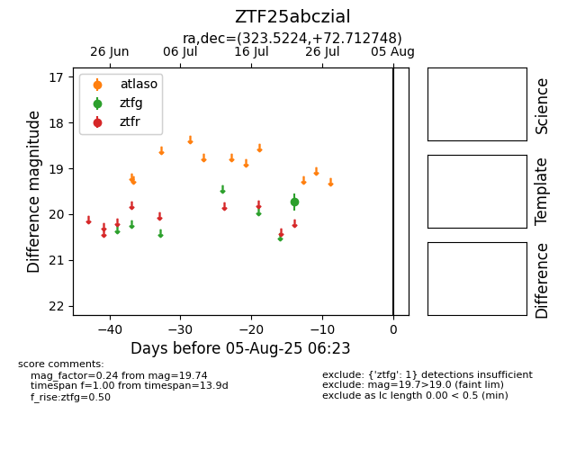

Target ZTF25abczial at 2025-08-05 07:33, see:
FINK: fink-portal.org/ZTF25abczial
Lasair: lasair-ztf.lsst.ac.uk/objects/ZTF25abczial
ALeRCE: alerce.online/object/ZTF25abczial
alt names
ZTF25abczial (ztf,fink)
coordinates:
equatorial (ra, dec) = (323.5224,+72.71275)
galactic (l, b) = (109.4203,+15.25137)
photometry
last ztfg=19.74
1 ztfg detections
